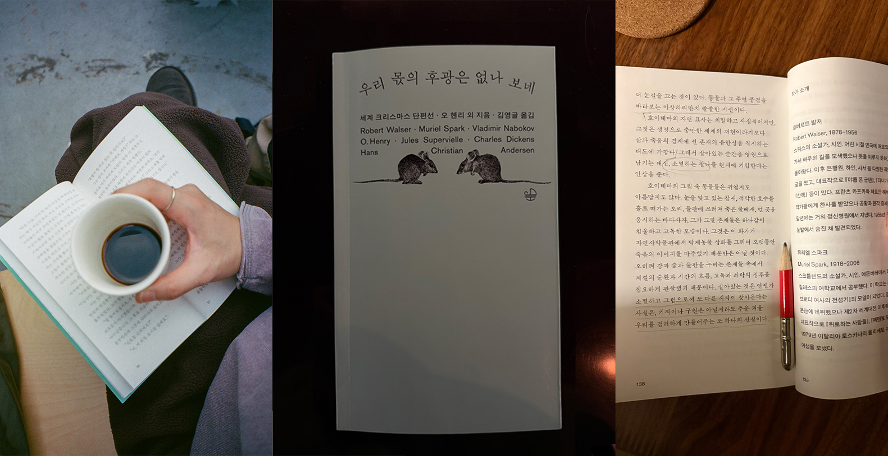

세계 크리스마스 단편선 『우리 몫의 후광은 없나 보네』

Notes
세계 크리스마스 단편선 ‘우리 몫의 후광은 없나 보네’는 (서문에 따르면) “달콤한 위로와 약속으로 현실의 균열을 봉합하지 않는 이야기, 읽고 나면 마음을 무겁게 만들지만 그만큼 단단하게도 해주는 이야기, 희망이 그러하듯 절망 또한 함부로 여길 수 없다는 사실을 일깨워주는 이야기들"을 엮은 단편선이다. 단순한 이야기에 거대한 진리를 품고 있는 안데르센의 <전나무>는 여전히 낙원이 있을 거라고 믿는 나에게 큰 깨달음을 주는 작품이었고, 오 헨리의 <경찰과 찬송가>는 쓸쓸한 성탄절 구전과도 같아 마음 한켠 먹먹했다. 미리 알게되는 비극이 과연 구원인가를 묻는 조용하고도 잔인한 이야기, 찰스 디킨스의 <신호수>와 ‘선의’라는 단어가 반복되는 순간 섬뜩해졌던, 뮤리엘 스파크의 <낙엽 쓰는 사람>은 읽자마자 소설에 대해서도 작가에 대해서도 찾아볼 만큼 인상적이었다.
이 책을 엮은 김영글 작가는, 비인간 동물들의 시선으로 다시 쓰인 예수의 탄생 이야기 <구유 옆의 소와 당나귀> 에서 소가 나직이 뱉은 “우리 몫의 후강은 없나 보네"라는 말에 곱씹을수록 깊은 울림이 있어 책의 제목으로 삼았다고 한다. 나 역시 이 책의 제목이 참 좋다. 우화는 언제나 무릎을 꿇게 만들고 이번에도 예외는 없었다.
크리스마스 선물과도 같은 책이었다. 당분간 이보다 더 좋은 단편선을 만날 수는 없을 것 같다. 출판사 돛과닻의 다음을 기대해본다.
살아있는 것은 언젠가 소멸하고 그럼으로써 또 다른 시작이 찾아온다는 사실은, 기적이나 구원은 아닐지라도 추운 겨울 우리를 겸허하게 만들어주는 또 하나의 진실이다 - 엮은이의 글 중에서
Quotes
햇살이 속삭였다. “네 젊음을 기뻐하렴. 네 안에서 자라나는 힘을, 생명의 기운을 자랑스레 여기렴.” (…) 그래, 분명 더 굉장한 일이 있을 거야! 하지만 그게 뭘까? 아, 가슴이 터질 것같아. 왜 이러는 나도 모르겠어. 햇살과 공기가 속삭였다. “지금 이 순간을 마음껏 기뻐하렴, 젊은 나날을, 이 탁 트인 숲속에서.” (…) 내 생에서 가장 행복했던 밤에 드른 거지만, 그때는 내가 얼마나 행복했는지도 몰랐지. (…) 모든 이야기는 언젠가 끝나게 마련이다. -⌜전나무⌟ 한스 크리스티안 안데르신
소피는 자신이 빠져든 구렁텅이를 두려운 마음으로 바라보았다. 타락한 나날, 부끄러운 욕망, 식어버린 희망, 망가진 재능, 비천한 동기로 이루어진 존재의 밑바닥을. 그의 심장은 전율하듯 깨어났다. (…) 소피는 결심했다. 이 절망적인 운명과 싸워, 진창에서 나를 스스로 끌어내리라. -⌜경찰과 찬송가⌟ 오 헨리
신경쇠약에 걸릴 것 같은 그의 못브은 차마 보기 힘들 정도였다. 그것은 생명과 직결된 일을 맡은 한 양심적인 사람이 도저히 감당할 수 없는 책임감에 짓눌려 겪는 정신적 고문이었다. -⌜신호수⌟ 찰스 디킨스
소는 천천히 일어나 구유 속을 보았다. 벌거벗은 아기가 잠들어 있었다. 소는 조심스레 콧김을 뿜어 아기의 몸을 구석구석 따뜻하게 덮혀주었다. (…) 새벽녘 다시 잠에서 깬 소는 발굽을 살며시 디디며 일어섰다. 혹시 아기를 깨우거나 천상의 꽃잎을 밟지는 않을지, 아니면 천사의 날개를 다치게 하지 않을지 두려웠다. 갑자기 모든 것이 놀라울만큼 어렵고 조심스러운 일이 되어버렸다. (…) 천사는 갓 태어난 아기의 머리 둘레에 투명한 후광을 그려주었다. 두 번째 후광은 마리아의 머리에, 세 번째 후광은 요셉의 머리에 그려졌다. “우리 몫의 후광은 없나 보네” 소가 말했다. “천사에게도 그럴 만한 이유가 있겠지.” (…) 소는 속으로 생각했다. ‘때로는 잠자코 있을 줄도 알아야지. 행복이 너무 커서 담을 곳이 없을 만큼 벅차더라도.’ -⌜구유 옆의 소와 당나귀⌟ 질 쉬페르비엘
오랫동안 이 순간을 기다려온 그것은 온 힘을 끌어모아 긴장으로 굳어 있던 몸을 마침내 터트리고는 천천히, 그리고 기적처럼 부풀어 오르기 시작했다. 쭈글쭈글하던 조직이 서서히 펴지고, 벨벳처럼 보드라운 가장자리도 한 겹씩 펼쳐졌다. 부챗살처럼 접혀있던 날개맥은 공기가 차오르면서 차츰 단단해졌다. 마치 아이의 얼굴이 눈에 띄지 않는 사이에 자라 어느 날 갑자기 성숙해지고 아름다워지듯, 그것 역시 눈에 띄지 않을 만큼 서서히 날개 달린 존재로 변해가고 있었다. -⌜죽음⌟ 블라디미르 나보코프
“지금은 선의로 가득한 기간이니까” (…반복…) 이따금 돌연한 바람이 불어 낙엽이 휘날릴 때면 조니는 고개를 홱 치켜들고 낙엽을 노려본다. 이치대로라면 낙엽이 더 이상 떨어져서는 안 되는데 아직도 멀쩡하게 떨어지고 있다는 사실이 도무지 믿기지고 않는다는듯이. -⌜낙엽 쓰는 사람⌟ 뮤리엘 스파크
나는 속으로 다짐했다 ‘다시는 저 사람에게 가지 않으리라’ 그 역시 생각했을 것이다. ‘그 자가 제발 다시는 나타나지 않기를’ 이렇게 해서 우리는 더없이 훌륭하게 의견이 일치한 셈이다. 밖으로 나오자 부끄러움이 밀려왔다. 나는 늘 이런 식으로 사람들로부터 떠나왔다. 반쯤은 우습고 반쯤은 서글펐다. (…) 눈 속에 파묻혀 고요히 죽어가는 자여, 설령 앞날이 보잘것없다 해도 삶은 여전히 아름답다네. -⌜한 편의 크리스마스 이야기⌟ 로베르트 발저